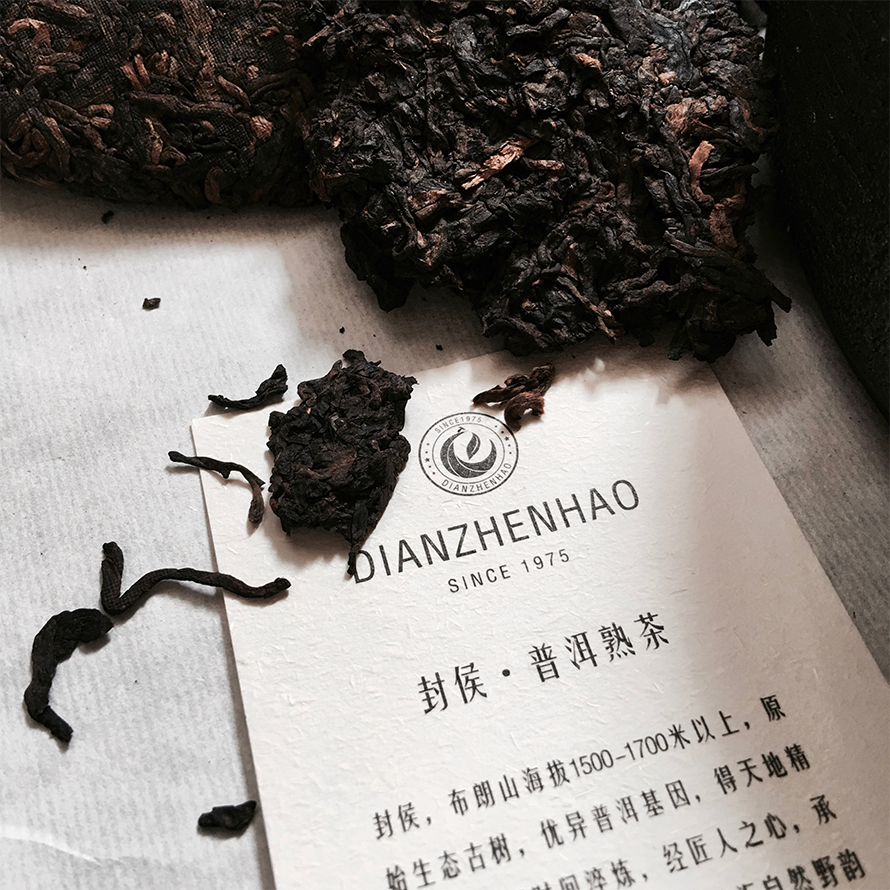
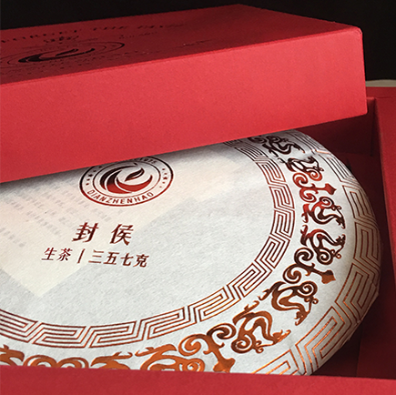
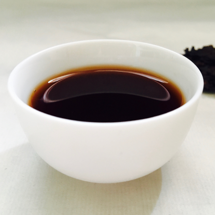
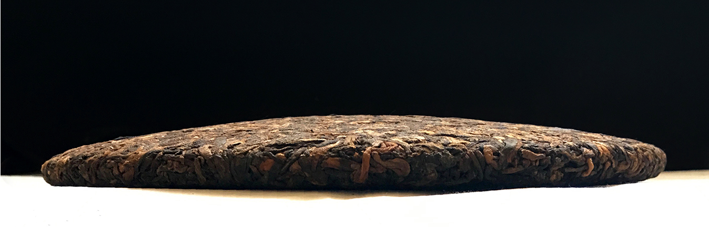

-保证水温92C以上
-第一道冲洗，让茶叶舒展
-高低冲泡，沿碗壁注水
-按口味投茶量（5-10g），六宫格一格一泡

YD_FH2016001
熟茶 饼茶

瑞草嘉木，得日月山川之精华孕毓而生。尚品稀物，择天人质器之纯洁细作而成。
宁洱困鹿山，地灵物阜，实天地之造化。皇家古茶园，源远流长，藏世间之神奇。
逢盛世而开发，扬普洱之盛誉。
辟云顶庄园，立滇臻宝号。
封侯典藏，茶中珍稀，真香灵味，回甘生津。惟有人中圣，方识草中英。
FENGHOU - YUNDING MANOR
- 香气清纯，浓厚回甘。常饮能防辐射、抗氧化。生津止渴、消暑、解毒。清理肠道，深层排毒。
- 能够改善消化，增强免疫，减轻辐射。软化血管、抗血栓、降血压、防治冠心病。预防早衰和骨质疏松。
-保证水温92C以上
-第一道冲洗，让茶叶舒展
-高低冲泡，沿碗壁注水
-按口味投茶量（5-10g），六宫格一格一泡
货号： DZH_FH2016001
品名： 封侯
类型： 熟茶/生茶 饼茶紧压茶
规格（饼茶）: 357g/饼、7饼/提、4提/件
规格（六宫格）:42g/个、4个/盒、2盒/提
原料：
困鹿山千年万亩古茶园中原始古茶树。
工艺：
古法与现代高科技精研结合，基因与传承中，匠心独到。
用独特的工艺，纯洁的器具，把难得的自然精妙芽叶，
催生为称誉普洱茶界的至味。
味型：
生茶 - 山野气韵，香气清扬，滋味醇厚，回甘生津明显。
熟茶 - 香气纯正自然、滋味柔和、口感温厚醇和。